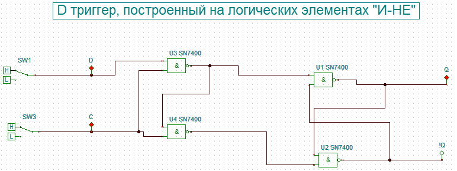
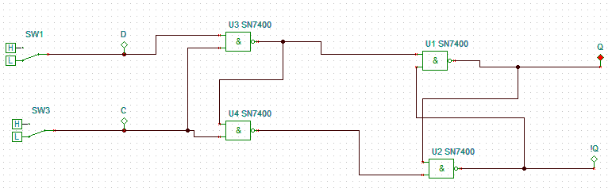
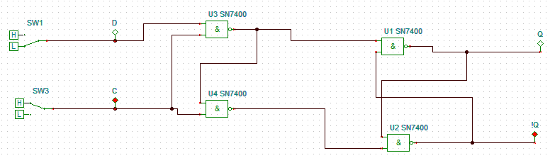
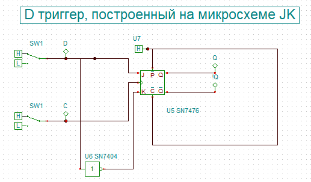
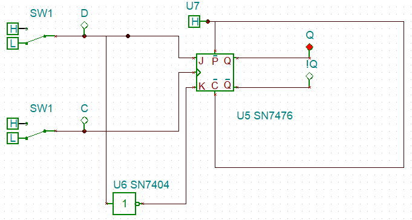
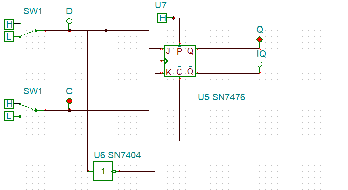
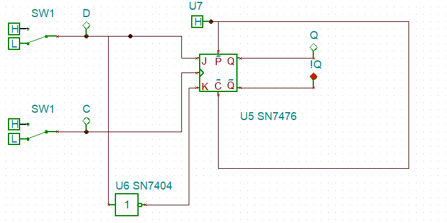

Ход выполнения работы
а) D-триггер на логических элементах "И-НЕ".
Для этого соберем на рабочем столе программы следующую схему:
Как видим она практически полностью соответсвует теоретической схеме из введения. Проверим соответсвует ли построенный триггер своей таблице истинности:

Из приведенных выше изображений можно сделать вывод, что построенный триггер действительно повторяет на выходе состояние входа D при наличии синхросигнала и сохраняет свое предыдущее состояние при его отсутсвии, что полностью соответсвиует принципу работы данного триггера. Из чего можем заключить, что триггер построен верно.
б) D-триггер на микросхеме JK.
Для этого соберем на рабочем столе программы следующую схему:
Как видно из полученной схемы D триггер был получен из JK микросхемы TINA путем использования ее входов J и K из за необходимости распознавания синхросигнала. Для беспрепятсвенного использвания этих входов как уже было описанно в задаче 1 необходимо подать сигнал на входы !Р и !Н. Вход D был получен путем подания из него прямого сигнала на вход J (соответсвующий входу S в RS триггере) и инвертированного на вход K (соответсвующий входу R в RS триггере), таким образом было достигнуто то, что на входы JK триггера всегда подается сигнал необходимый для установления на его прямом выходе сигнала равного таковому на входе D.
Синхросигнал в построенной схеме ввиду особенностей JK триггера в TINA, описанных в задаче 1, работает слежующим образом: состояние триггера изменяется только при убывании синхроимпульса, а значит при отключении сигнала на входе С.
Проверим работу полученной схемы:


Из представленных выше изображений можем сделать вывод, что триггер работает соответсвенно паратметрам D триггера и свойствам JK микросхемы, а значит построен правильно.